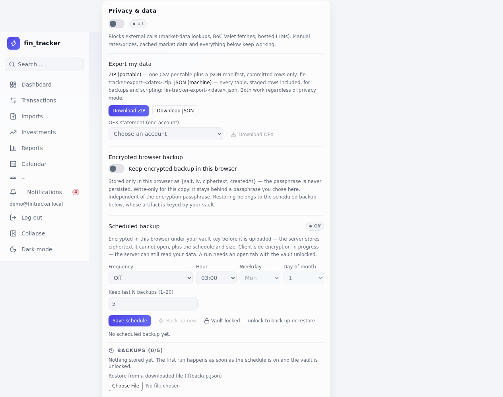

Export & portability
Exactly what you can take with you — the file list, the schema, and the no-lock-in promise.
One click, one ZIP
Settings → Privacy → Export my data → Download ZIP gives you fin-tracker-export-<date>.zip: a manifest.json plus one CSV per table — accounts, transactions, categories, tags, rules, trades, budgets, goals, bills, debts, subscriptions, prices, fx rates and every other table the app keeps. The list is generated from the live schema, not a hand-written one, so a table added later appears in your next export without anyone remembering to update a list.

The file documents itself
manifest.json is the schema of everything else in the archive: every file with its row count and exact column order, plus the export's version, timestamp, vault state, and the tables that were deliberately left out (with the reason). CSVs are UTF-8 with a single header row: an empty cell is null, booleans are true / false, dates are YYYY-MM-DD, and money is an exact decimal string — never a float that rounds your balances.
No lock-in — the whole point
Plain CSV and JSON in a plain ZIP. No proprietary container, no export key, no second account, nothing to unlock and nothing to re-import before you can read it. Open it in a spreadsheet, load it into SQLite, or hand it to another app. The panic this answers is the familiar one — “download your history or you will never have access again” — and the answer is not a reassurance, it is this button: your complete history in a format that outlives any one product, including this one.
Round-trip into other tools with OFX
Each account also exports as an OFX 1.02 statement (Settings → Privacy → Export my data → pick an account → Download OFX). OFX is the interchange format banks and finance tools already speak, and our own importer reads it: feeding the file straight back into fin_tracker imports 0 new rows, because deduplication recognizes every transaction already in your ledger.
Schedule it, and watch the committed-only rule
Scheduled export stores a ZIP in this browser — daily, weekly or monthly, keeping the last 1–20 archives — using the same schedule shape as the scheduled backup. It needs a tab open, like every client-side schedule, and the archives live only on this machine: clearing browser data removes them, so download the ones you want to keep. The ZIP contains what the app shows you — committed transactions and trades only; rows still sitting in a pending import are left out until you confirm them. The full machine snapshot (staged rows included) is the separate Download JSON button.